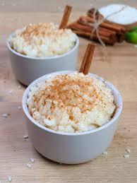

Ingredientes

- 1 taza de arroz crudo
- 1 lata de leche condensada
- 1 lata de leche evaporada
- 2 astillas de canela
- 5 clavos de olor
- 5 tazas de agua
- Ralladura de limón
- Coco rallado o pasas (Opcional)
Preparación

- Colocar en una olla las 5 tazas de agua con las astillas de canela, ralladura de limón y los clavos de olor. Dejar hervir.
- Agregar el arroz y cocinarlo hasta que este suave.
- Agregar la leche condensada y la leche evaporada y revolver constantemente.
- Retirar las astillas de canela, la ralladura y los clavos de olor.
- Adicionar el coco rallado o las pasas y mezaclar hasta que este cremoso.